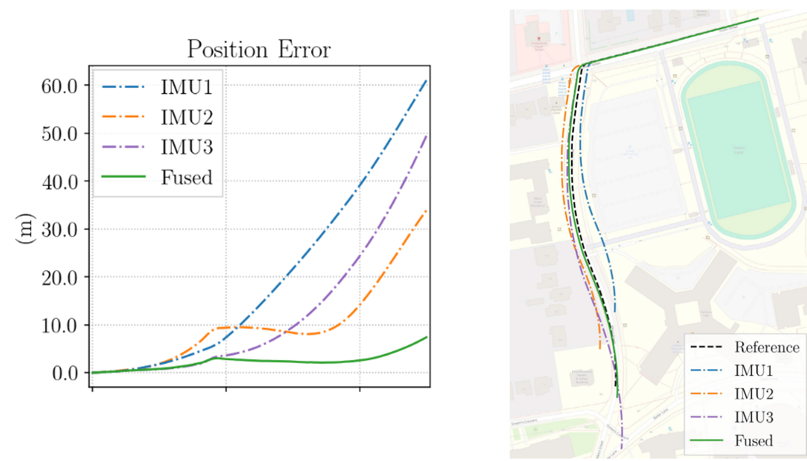

Milestones
High-level project phases from concept development through testing and final prototype work.
September - October 2025
Investigate GPS denial, IMU drift, AI-based navigation correction, and prior research.

November - December 2025
Define functional and non-functional system, hardware, and software requirements.

January - February 2026
Develop early hardware and software prototypes and evaluate feasibility.

March - April 2026
Test system behavior, performance, latency, and deployment readiness.

April - May 2026
Refine the design and integrate system-level improvements for final demonstration.

Review our comprehensive findings, testing data, and final prototype details from the latest project phase.
Future Work
While the initial scope of the NavFusion project has concluded, here are the three most critical areas for continued development and deployment.
Transition from ground-based van testing to full-scale UAV flight trials, ensuring the custom vibration isolation and AI drift correction perform optimally under high-frequency drone dynamics.
Further accelerate the PSO-LSTM and GRU-AKF models on the embedded hardware using tools like TensorRT and quantization to drive inference latency well below the current 50 ms target.
Incorporate secondary exteroceptive sensors, such as visual odometry or LiDAR, into the ROS2 pipeline to create a tightly coupled fusion system for indefinitely extended GPS-denied operations.